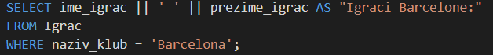
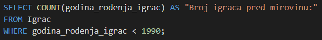
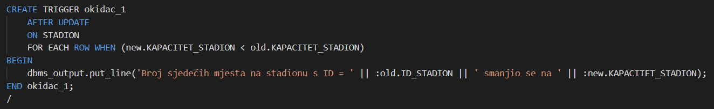

Kao veliki fan nogometa, pogotovo Barcelone odlučio sam napraviti bazu podataka za La Ligu jer mi se to činila kao zanimljiva i korisna tema za izradu projekta za ovaj kolegij.
Marko Špoljarec, 2. godina Matematike i račurastva, Odjel za matematiku.
|
Liga Nacional de Fútbol Profesional, odnosno skraćeno La Liga je prva Španjolska nogometna liga. Osnovana je 1929. godine i u njoj se svake godine natječe 20 najboljih španjolskih klubova. Trenutni rekorder po broju osvojenih naslova je Real Madrid koji ih ima čak 34, a ove godine je Atlético Madrid srušio Barcelonu i Real Madrid s trona i odnio naslov. |
|
Kao veliki fan nogometa, pogotovo Barcelone odlučio sam napraviti bazu podataka za La Ligu jer mi se to činila kao zanimljiva i korisna tema za izradu projekta za ovaj kolegij. |
Tablice sam radio sljedećim redosljedom:
| Kod: | Opis: | Veza: |
|
Tablica DRZAVA sadrži sve države na svijetu. Odnosno sadrži informacije o ID-u države, njenom nazivu te broju stanovnika. |
Tablica DRZAVA je povezana s tablicom GRAD vezom 1:M. Odnosno svaka država može imati više gradova, a svaki grad može imati jednu državu. Također, tablica DRZAVA je povezana s tablicom IGRAC vezom 1:M, odnosno, iz svake države može biti više igrača, dok svaki igrač pripada samo jednoj državi. |
| Kod: | Opis: | Veza: |
|
Tablica GRAD sadrži sve gradove svake države. Odnosno sadrži informacije o ID-u grada, njegovom imenu te strani ključ koji je spaja s tablicom DRZAVA. |
Tablica GRAD povezana je s tablicom DRZAVA (veza je već objašnjena kod opisa tablice DRZAVA). Također, tablica GRAD je povezana s tablicom STADION vezom 1:M, odnosno, u svakom gradu se može nalaziti više stadiona, ali svaki stadion se nalazi u točno jednom gradu. |
| Kod: | Opis: | Veza: |
|
Tablica STADION sadrži popis svih stadiona na kojima se odigravaju utakmice La Lige. Njezini atributi su ID, naziv stadiona, godina gradnje, kapacitet, cijena karate te strani ključ na tablicu GRAD. |
Tablica STADION povezana je s tablicom GRAD (veza je već objašnjena kod opisa tablice GRAD). Također, tablica STADION povezana je s tablicom KLUB vezom 1:1, odnosno, svaki klub ima svoj jedinstveni stadion to jest svaki stadion pripada točno jednom klubu. |
| Kod: | Opis: | Veza: |
|
Tablica SPONZOR sadrži popis svi spoznora koji sponzoriraju klubove u La Ligi. Njezini atributi su ID i ime kompanije ili osobe sponzora. |
Tablica SPONZOR povezana je s tablicom KLUB vezom M:N. Odnosno, svaki sponzor može sponzorirati više klubova te svaki klub može imati više od jednog sponzora. Kako je veza M:N problematična, napravio sam tablicu KLUB_SPONZOR kako bi riješio problem veze M:N. |
| Kod: | Opis: | Veza: |
|
Tablica LALIGA sadrži popis svih klubova u La Ligi po njihovim pozicijama. Njezini atributi su ID, odnosno pozicija kluba na ljestivici te atribute Liga Prvaka i Europska Liga koje označuju je li se klub uspio kvalificrati u neko od velikih natejcanja. |
Tablica LALIGA povezana je s tablicom KLUB vezom 1:M, odnosno, svaki klub ima točno jednu određenu poziciju dok u samoj ligi se može natjecati više od jednog kluba. |
| Kod: | Opis: | Veza: |
|
Tablica KLUB sadrži popis svih klubova u La Ligi. Njezini atributi su ime kluba, boja kluba, broj osvojenih naslova, ime i prezime vlasnika kluba te strane ključeve na tablicu LALIGA i tablicu STADION. |
Tablica KLUB povezana je s tablicom LALIGA (veza je već objašnjena kod opisa tablice LALIGA), tablicom STADION (veza je već objašnjena kod opisa tablice STADION) , tablicom SPONZOR (veza je već objašnjena kod opisa tablice SPONZOR) te tablicom IGRAC vezom 1:M. Odnosno svaki igrač može igrati u točno jednom klubu, dok svaki klub može imati više od jednog igrača. |
| Kod: | Opis: | Veza: |
|
Tablica KLUB_SPONZOR napravljena je kako bi se riješio problem M:N veze između tablica KLUB i SPONZOR. |
Povezana je s tablicama KLUB i SPONZOR vezama 1:M. |
| Sintaksa: | Primjer: |
| Opis: | Kod: |
| Ovaj primjer kao rezultat vraća sve igrače Barcelone iz tablice IGRAC tako što sam postavio klazulu WHERE kao WHERE = 'Barcelona'. |  |
| Opis: | Kod: |
| Uz pomoć JOIN operacije na atribut id_drzava spojio sam tablice IGRAC i DRZAVA te kao rezultat vratio sve igrače koji su iz Španjolske i igraju u La Ligi. |
| Opis: | Kod: |
| Koristeći agregirajuću funkciju COUNT dobio sam rezultat kao broj igrača iz La Lige koji će uskoro u mirovinu (ako je netko od igrača rođen prije 1990 godine, onda bi on trebao uskoro u mirovinu). |  |
| Opis: | Kod: |
| Primjer podupita koji prvo računa prosiječnu vrijednost svih igrača, zatim onda tu vrijednost uspoređuje sa svakim igračem te onda vraća samo one igrače čija je vrijednost veća od prosječne. |
| Opis: | Kod: |
| Ova procedura služi za ažuriranje kluba igrača u slučaju transfera. Parametri su ID igrača te ime njegovog novog kluba. |
| Opis: | Kod: |
| Ovaj okidač služi da nas obavijesti u slučaju kad kod ažuriranja kapaciteta stadiona broj mjesta bude manji nego prije. |  |